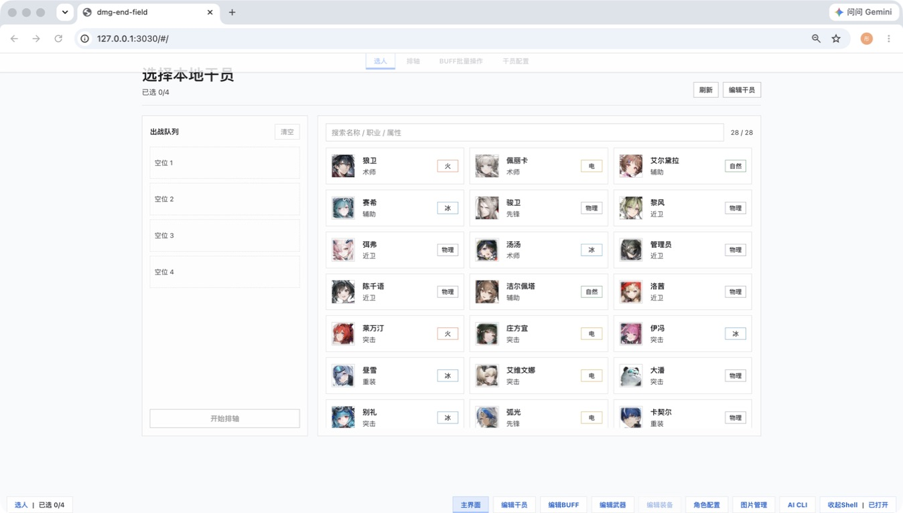
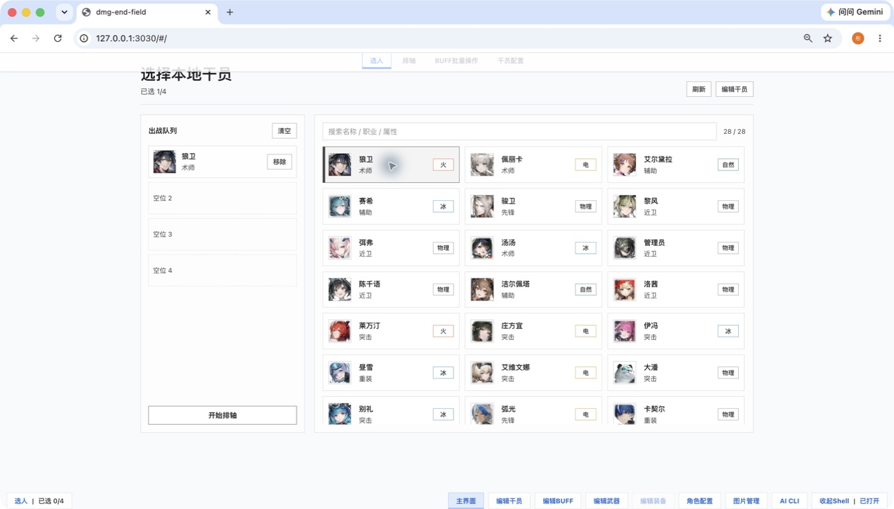
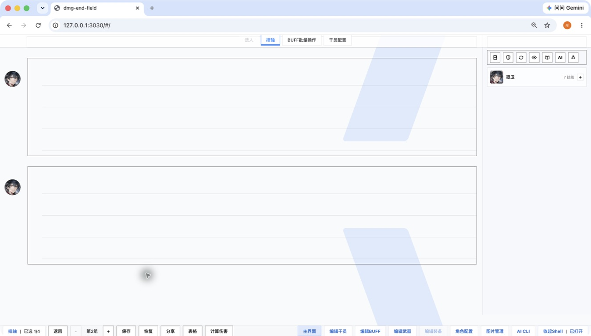

01
OPERATOR LIBRARY
本地资料，随时可编辑
从干员、武器、装备到 Buff，资料与配置就在工作台里。选入出战队列后，开始下一步推演。

LOCAL-FIRST DAMAGE WORKBENCH
为《明日方舟：终末地》配装、排轴、伤害计算与本地资料维护打造的桌面工作台。让复杂思路保留为可保存、可检查、可恢复的文档。

不是自动战斗脚本，也不是一次性在线计算器。
这是一个让每一次推演都留下后续空间的本地工作台。
BUILT FOR ITERATION
每个功能都服务于同一件事：让换装、改技能、比较思路时，结果不再只是一串会消失的数字。
OPERATOR LIBRARY
从干员、武器、装备到 Buff，资料与配置就在工作台里。选入出战队列后，开始下一步推演。

TIMELINE CANVAS
围绕技能按键、敌方抗性、Buff 与命中细节建立排轴，把复杂配置放回同一张可操作的画布。
了解排轴工作流 →REPORTING
对比方案不必只停留在当前页面。排轴支持保存、恢复、分享，并可通过表格和伤害报告继续整理。
DEF DATA ASSISTANT
内置 DEF 数据助手，通过受限的领域工具协作。它的修改先成为提案，等待检查与确认。

MORE IN THE WORKBENCH
干员配置武器与装备Buff 批量编辑命中与抗性微调伤害计算过程保存 / 恢复 / 分享图片管理自定义资料ONE CONTINUOUS FLOW
工作台把本地配置、正式方案与 AI 的探索结果分开处理。这样你既能尝试新思路，也不会意外覆盖正在使用的方案。
从本地干员库选择出战角色，准备武器、装备与属性配置。
在画布上安排技能与状态，逐段校准目标抗性和命中细节。
完整配置按内容保存，重要节点可成为可恢复的快照。
AI 在隔离工作节点里探索；你可以检查差异、应用或丢弃。

VISIBLE BOUNDARIES
数据事实源在本机。排轴不是易失的页面状态，而是一份可恢复的 SQLite 文档。
AI 没有任意权限。它通过已定义的角色、武器、装备、伤害与排轴工具操作。
运行时可被验证。Harness 用真实会话回放比较候选与稳定行为，关注修复、回归和用户状态安全。
READY WHEN YOU ARE
一个非官方的个人工具与研究项目。用于资料整理、配装推演和开发实践。
前往 GitHub ↗